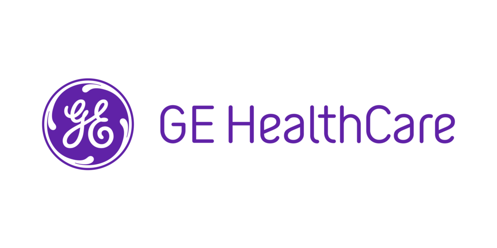

À Propos de Moi
Bonjour, je suis Meftah Zineb.
Major de promotion en L2 et L3 à l’Université d’Avignon (1ʳᵉ sur 126 étudiants, moyenne > 15/20) et issue du cycle préparatoire d’élite de l’ENSIA (Alger). Après un stage d’ingénierie IA & MLOps chez GE HealthCare à Paris, je conçois et déploie des systèmes d’IA en production : agents RAG, pipelines LLM et systèmes autonomes.
J’ai notamment développé un agent RAG permettant d’interroger des documentations techniques complexes en langage naturel, ainsi qu’un système d’outreach IA entièrement autonome déployé en production. Je suis actuellement en Master 1 MLSD à l’Université Paris Cité, et je cherche l’entreprise où mettre tout cela en pratique — en CDI, CDD ou alternance.
Ce qui me distingue : réunir une vraie rigueur d’ingénieure — code, backend, systèmes complexes — et la maîtrise de l’IA pour en faire des solutions qui tournent réellement, en production.
Formation & Certifications
-
Université Paris Cité, France
Master 1 MLSD — Machine Learning pour la Science des Données, réalisable en alternance. L'une des formations en IA les plus reconnues.
Depuis septembre 2026 · en cours
-
Université d'Avignon (CERI), France
Licence Informatique — Parcours IA : Major de promotion L2 & L3 (1ʳᵉ sur 126), moyenne > 15/20.
Septembre 2024 — Juin 2026 · obtenue
-
ENSIA, Algérie
Cycle préparatoire d'élite en IA — école nationale ultra-sélective, cursus entièrement en anglais. 1ʳᵉ et 2ᵉ années validées (120 ECTS, Mention Très Bien).
2022 - Juin 2024
-
Baccalauréat Scientifique
Mention : Excellent — Moyenne 17,82
2019 / 2022
Certifications
-
Algerian Youth Leadership Program – NNIC
Programme d’échanges axé sur le leadership.
-
LanguageCert C2 — ESOL International (Ofqual)
Certification d'anglais niveau C2, régulée par l'Ofqual (PeopleCert), obtenue en février 2026.
-
Introduction to Deep Learning with PyTorch
Formation en ligne sur les réseaux de neurones.
Publications
Article technique publié sur Hugging Face : une méthode de génération d’un jeu de données appariant mots-clés et articles, par fine-tuning inversé, pensée pour entraîner des modèles de génération de tags. Il détaille la construction du corpus, le contrôle qualité et les limites de l’approche.
Exemple de base de données
| Keywords | Articles |
|---|---|
| Global Economy, Inflation Challenges... | Navigating inflation challenges has become a central focus... |
| Brazil, Biodiversity, Deforestation... | Brazil's rich biodiversity is increasingly threatened... |
Projets et Expériences
Survolez ou cliquez pour voir les détails
Agent d'Outreach IA · Production
Système d'IA autonome déployé en production.
Pipeline d'IA entièrement autonome en production : qualification d'offres par LLM, génération d'emails personnalisés, envoi SMTP, suivi IMAP et classification des réponses. 7 skills LLM orchestrées sur cron. Stack : Python, Claude API, Playwright, Google Cloud VM.
Agent RAG · GE HealthCare
Recherche documentaire en langage naturel.
Agent RAG en production chez GE HealthCare permettant d'interroger des documentations techniques complexes en langage naturel, avec réponses sourcées — réduisant des recherches de plusieurs heures à quelques secondes. Codé de bout en bout (prétraitement métier, retrieval BM25 + reranker + LLM), puis ré-architecturé en système multi-agents sur Microsoft Copilot Studio quand le coût en tokens du pipeline linéaire est devenu le facteur limitant. Stack : Python, LLM, retrieval multi-étapes, Copilot Studio, intégrations d'outils internes.
Moteur de Contenu Autonome · Multi-Plateformes
Création & publication de contenu 100% automatisées.
Système autonome en boucle fermée qui crée et publie du contenu sur YouTube, TikTok, Instagram et Facebook. Volet musique : chansons publiées sur fond vidéo bouclé avec scripts, gestion de playlists, validation, séries d'images sur Instagram, journalisation de chaque publication dans Google Sheets ; des workflows récupèrent vues et likes, les stockent, et chaque semaine un workflow sélectionne le meilleur titre et le republie sur une chaîne « best-of » dédiée. Volet influence : un influenceur IA met en scène un produit et le publie avec un lien d'affiliation Amazon. Pilotage par simple email (plateforme, chaîne, langue, contenu) — le système fait le reste et répond avec le lien du post et le lien d'affiliation. Workflows orchestrés sur n8n, déployé sur AWS EC2.
LeRobot PushT Trainer
Entraînement de politiques robotiques.
Pipeline MLOps complet utilisant des modèles de Diffusion pour l'entraînement de politiques de manipulation robotique. Intégration avec Hugging Face, accélération CUDA et visualisation via Gradio.
Détection du Cancer du Poumon
Diagnostic médical par Deep Learning.
Classification de 4 types de carcinomes pulmonaires via réseaux de neurones convolutifs (CNN) sur imagerie CT.
Robot Vision Simulator
Simulateur interactif de vision.
Simulateur web intégrant COCO-SSD pour la détection d'objets en temps réel, l'algorithme A* pour la planification de trajectoire et le traitement de commandes en langage naturel.
Générateur IA de sites web
Du texte au site web fonctionnel.
Une plateforme qui transforme une simple demande en langage naturel en site web personnalisé complet, pensée pour des personnes sans compétences techniques. En développement. Stack : Next.js, TypeScript, LLM.
Voir le code sur GitHubNews Wave
Emails d'actualité personnalisés par IA.
Service d'emails d'actualité personnalisés : titres reformulés selon vos centres d'intérêt et vos sources, qui s'affine à partir de vos clics. En cours : alertes temps réel pour les news urgentes propres à chaque utilisateur.
Voir le codeAnalyse de Sentiments (Avis)
NLP & Classification de textes.
Implémentation de modèles NLP pour la classification automatisée de sentiments sur de larges jeux de données textuels.
Segmentation Client (Clustering)
Analyse de données non supervisée.
Application de l'algorithme K-Means pour la segmentation stratégique et l'analyse comportementale des clients.
Optimisation Agricole
IA pour l'agriculture durable.
Système d'aide à la décision (recherche par graphes, optimisation sous contraintes) pour maximiser la production.
Moteur de Recherche
Indexation et recherche textuelle.
Moteur de recherche haute performance en Java implémentant les modèles TF-IDF et BM25 pour l'indexation.
Analyse Réseau Routier
Algorithmes de graphes avancés.
Analyse structurelle du réseau routier via l'algorithme de Dijkstra et des mesures de connectivité complexes.
Compilateur Pascal-like
Architecture de compilateur complète.
Compilateur Mini-Pascal complet (analyse lexicale, syntaxique, sémantique) développé en C/Flex/Bison.
NOVA
Co-watching vidéo temps réel.
Plateforme sociale Full-Stack permettant le visionnage synchronisé de vidéos en temps réel avec messagerie.
CERICar
Covoiturage Full-Stack.
Application web complète de covoiturage gérant les trajets, les réservations et les profils utilisateurs.
G-Jobs
Plateforme d'emploi intelligente.
Solution de recrutement intelligente avec filtres avancés, messagerie et suivi des candidatures.
Chaîne de Restaurants
Gestion multisites.
Système centralisé de gestion multi-pays (stocks, personnel, rapports financiers) pour chaînes de restauration.
Mon Supermarché Numérique
Gestion stock CLI.
Application CLI pour la digitalisation des inventaires et l'automatisation de la gestion des stocks en temps réel.
Expérience & Leadership
Survolez ou cliquez pour voir les détails

Stage Ingénierie IA & MLOps — Paris (2026). Agent RAG en production : pipeline d'abord codé de bout en bout (skills modulaires), puis ré-architecturé en système multi-agents sur Microsoft Copilot Studio (workflows et sous-agents) une fois le coût en tokens du pipeline linéaire devenu le facteur limitant — prétraitement maison conservé en amont, qualité et temps de traitement améliorés.
GE HealthCare — Stagiaire IA & MLOps
Google Developer Student Club ENSIA (2023–2024) — gestion de l'infrastructure, animation d'ateliers techniques et accompagnement des membres sur leurs projets.
Responsable informatique
Northern Nevada International Center (2021) — Algerian Youth Leadership Program
Participant AYLP
Organisation de hackathons et d'ateliers en IA et développement web : logistique, mentorat et animation technique.
Organisation d'événements
- Hackathon IA Avignon (24h, 2024) — Tech Lead
- Mentor junior – GDSC (2023)
- Projet tutoré G‑JOBS (2024) : tâches, Git, review
Autres Réalisations
Compétences
IA & Data Science
Intelligence Artificielle
Techniques
Frameworks & Outils
Data Science
Analyse & Visualisation
Concepts Clés
- Génération de données synthétiques
- Fine-tuning
- Clustering & Segmentation (K-Means)
- Algorithmes de Graphes (A*, Dijkstra)
Compétences Techniques
Programmation & Systèmes
Langages
DevOps & Outils
Full-Stack Web
Backend
Frontend
Compétences Personnelles
Rédaction Scientifique
Publication d'articles techniques (Hugging Face), documentation structurée.
Leadership & Teamwork
Expérience GDSC, mentorat, gestion de projets agiles.
Résolution de problèmes
Approche algorithmique, optimisation de performance.
Apprentissage continu
Veille technologique active (Papers with Code, arXiv).
Langues
Français
Avancé (C1)
Année universitaire validée en France
Anglais
Bilingue (C2)
Voir certificat
Arabe
Langue maternelle
Contact
☎ Téléphone
+33 (0) 6 10 79 07 36
📍 Localisation
Île-de-France, France